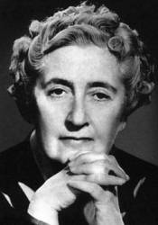

2021
En 2021 pasó al dominio público la obra del político y escritor Manuel Azaña, la del dibujante Carlos Gómez Carrera, conocido por su seudónimo Bluff, o la del pintor Joaquín Mir y Trinxet, estos últimos víctimas de la represión posterior a la Guerra Civil española. También pasaron al dominio público en España las obras de los dramaturgos rusos Isaak Babel y Mikhail Bulgakov y del escritor norteamericano Scott Fitzgerald.
En 2021, gracias al Brexit, pasaron al dominio público en España todos los escritores británicos muertos entre 1940 y 1951 (por ejemplo, George Orwell, Agatha Christie, Virginia Woolf, T. S. Eliot o Beatrix Potter). Al salirse el Reino Unido de la Unión Europea, sus obras dejaron de estar sometidas al plazo de 80 años vigente en España y pasaron a estar sometidas al plazo de 70 años vigente en el Reino Unido. El caso de Stefan Zweig dio lugar a reclamaciones judiciales discutiendo su paso al dominio público, ya que Zweig nació en Austria, aunque era ciudadano británico cuando se suicidó en Brasil en 1942.
2022

En 2022 pasó al dominio público la obra del compositor José Serrano Simeón, más conocido como el Maestro Serrano, autor de la música del himno de la Comunidad Valenciana, o la del dibujante Cesáreo del Villar Besada, conocido por su seudónimo, Karikato. También pasó al dominio público en España la obra del filósofo francés Henry Bergson o del poeta bengalí Rabindranath Tagore.
2023
En 2023 los artistas españoles más conocidos que han pasado al dominio público son sin duda el poeta Miguel Hernández y el escultor Julio González. También ha pasado al dominio público la escritora francesa nacida en Rusia Irène Némirovsky.
2024
En 2024 serán pocos los artistas famosos que pasen al dominio público en España. Quizás los más conocidos sean el compositor ruso Serguéi Rajmáninov y, en España, el dramaturgo alicantino Carlos Arniches.